건설기계설비기사 (2016-03-06 기출문제)
1과목: 재료역학
1. 그림과 같은 일단 고정 타단지지 보에 등분포 하중 ω가 작용하고 있다. 이 경우 반력 RA와 RB는? (단, 보의 굽힘강성 EI는 일정하다.)
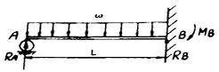
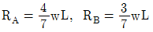
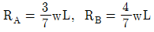
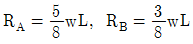
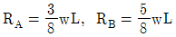
(정답률: 30%)

2. 그림과 같은 블록의 한쪽 모서리에 수직력 10kN이 가해질 경우, 그림에서 위치한 A점에서의 수직응력 분포는 약 몇 kPa인가?
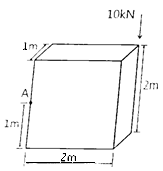
- 25
- 30
- 35
- 40
(정답률: 25%)
3. 바깥지름이 46mm인 속이 빈 축이 120kW의 동력을 전달하는데 이 때의 각속도는 40rev/s이다. 이 축의 허용비틀림응력이 80MPa일 때, 안지름은 약 몇 mm 이하이어야 하는가?
- 29.8
- 41.8
- 36.8
- 48.8
(정답률: 23%)
4. 그림과 같은 장주(long column)에 하중 Pcr을 가했더니 오른쪽 그림과 같이 좌굴이 일어났다. 이때 오일러 좌굴응력 σcr은? (단, 세로탄성계수는 E, 기둥 단면의 회전반경(radius of gyration)은 r, 길이는 L이다.)
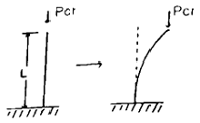
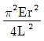
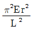
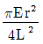
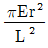
(정답률: 30%)
5. 그림과 같은 외팔보가 하중을 받고 있다. 고정단에 발생하는 최대굽힘 모멘트는 몇 N·m 인가?
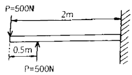
- 250
- 500
- 750
- 1000
(정답률: 32%)
6. 양단이 고정된 축을 그림과 같이 m-n 단면에서 T 만큼 비틀면 고정단 AB에서 생기는 저항 비틀림 모멘트의 비 TA/TB는?
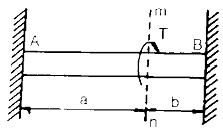
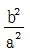
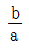
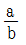
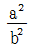
(정답률: 30%)
7. 단면의 치수가b×h = 6cm×3cm 인 강철보가 그림과 같이 하중을 받고 있다. 보에 작용하는 최대 굽힘응력은 약 몇 n/cm2 인가?
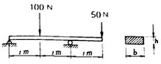
- 278
- 556
- 1111
- 2222
(정답률: 24%)
8. 그림과 같이 강봉에서 A, B가 고정되어 있고 25℃에서 내부응력은 0인 상태이다. 온도가 -40℃로 내려갔을 때 AC 부분에서 발생하는 응력은 약 몇 MPa인가? (단, 그림에서 A1은 AC 부분에서의 단면적이고 A2는 BC 부분에서의 단면적이다. 그리고 강봉의 탄성계수는 200GPa이고, 열팽창계수는 12×10-6/℃이다.)
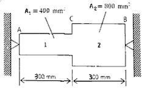
- 416
- 350
- 208
- 154
(정답률: 11%)
9. 보의 길이 ℓ에 등분포하중 ω를 받는 직사각형 단순보의 최대 처짐량에 대하여 옳게 설명한 것은? (단, 보의 자중은 무시한다.)
- 보의 폭에 정비례한다.
- ℓ의 3승에 정비례한다.
- 보의 높이의 2승에 반비례한다.
- 세로탄성계수에 반비례한다.
(정답률: 30%)
10. 그림과 같은 트러스 구조물의 AC, BC 부재가 핀C에서 수직하중 P = 1000N의 하중을 받고 있을 때 AC부재의 인장력은 약 몇 N인가?
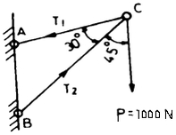
- 141
- 707
- 1414
- 1732
(정답률: 29%)
11. 재료시험에서 연강재료의 세로탄성계수가 210GPa로 나타났을 때 포아송 비(v)가 0.303 이면 이 재료의 전단탄성계수 G는 몇 GPa 인가?
- 8.⑤
- 10.51
- 35.21
- 80.58
(정답률: 29%)
12. 다음 중 수직응력(normal stress)을 발생시키지 않는 것은?
- 인장력
- 압축력
- 비틀림 모멘트
- 굽힘 모멘트
(정답률: 32%)
13. 힘에 의한 재료의 변형이 그 힘의 제거(除去)와 동시에 원형(原形)으로 복귀하는 재료의 성질은?
- 소성(plasticity)
- 탄성(elasticity)
- 연성(ductility)
- 취성(brittleness)
(정답률: 34%)
14. 다음과 같은 평면응력상태에서 최대전단응력은 약 몇 MPa 인가?
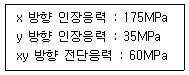
- 38
- 53
- 92
- 108
(정답률: 26%)
15. 그림과 같은 원형 단면봉에 하중 P가 작용할 때 이 봉의 신장량은? (단, 봉의 단면적은 A, 길이는 L, 세로탄성계수는 E이고, 자중 W를 고려해야 한다.)
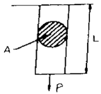
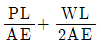
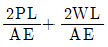
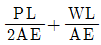
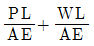
(정답률: 31%)
16. 그림과 같이 최대 qo인 삼각형 분포하중을 받는 버팀 외괄보에서 B 지점의 반력 RB를 구하면?
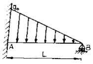
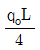
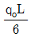
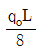
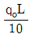
(정답률: 26%)
17. 길이가 3.14m인 원형 단면의 축 지름이 40 mm일 때 이 축이 비틀림 모멘트 100 N·m를 받는다면 비틀림각은? (단, 전단 탄성계수는 80 GPa이다.)
- 0.156°
- 0.251°
- 0.895°
- 0.625°
(정답률: 28%)
18. 지름 d인 원형단면으로부터 절취하여 단면 2차 모멘트 I가 가장 크도록 사각형 단면 [폭(b)×높이(h)]을 만들 때 단면 2차 모멘트를 사각형 폭(b)에 관한 식으로 옳게 나타낸 것은?
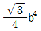
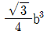
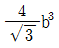
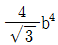
(정답률: 19%)
19. 반지름이 r인 원형 단면의 단순보에 전단력 F가 가해졌다면, 이 때 단순보에 발생하는 최대 전단응력은?
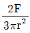
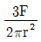
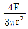
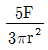
(정답률: 30%)
20. 직사각형 단면(폭×높이) 4cm×8cm이고 길이 1m의 외괄보의 전 길이에 6kN/m의 등분포하중의 작용할 때 보의 최대 처짐각은? (단, 탄성계수 E=210 GPa 이고 보의 자중은 무시한다.)
- 0.0028rad
- 0.0028°
- 0.0008rad
- 0.0008°
(정답률: 23%)
2과목: 기계열역학
21. 체적이 0.01m3인 밀폐용기에 대기압의 포화혼합물이 들어있다. 용기 체적의 반은 포화액체, 나머지 반은 포화증기가 차지하고 있다면, 포화혼합물 전체의 질량과 건도는? (단, 대기압에서 포화액체와 포화증기의 비체적은 각각 0.001044m3/kg, 1.6729m3/kg 이다.)
- 전체질량 : 0.0119 kg, 건도 : 0.50
- 전체질량 : 0.0119 kg, 건도 : 0.00062
- 전체질량 : 4.792 kg, 건도 : 0.50
- 전체질량 : 4.792 kg, 건도 : 0.00062
(정답률: 23%)
22. 4kg의 공기가 들어 있는 용기 A(체적 0.5m3)와 진공 용기 B(체적 0.3m3) 사이를 밸브로 연결하였다. 이 밸브를 열어서 공기가 자유팽창하여 평형에 도달했을 경우 엔트로피 증가량은 약 몇 kJ/K인가? (단, 온도 변화는 없으며 공기의 기체상수는 0.287kJ/kg·K 이다.)
- 0.54
- 0.49
- 0.42
- 0.37
(정답률: 22%)
23. 기체가 열량 80kJ을 흡수하여 외부에 대하여 20kJ의 일을 하였다면 내부에너지 변화는 몇 kJ 인가?
- 20
- 60
- 80
- 100
(정답률: 33%)
24. 물 2kg을 20℃에서 60℃가 될 때까지 가열할 경우 엔트로피 변화량은 약 몇 kJ/K 인가? (단, 물의 비열은 4.184kJ/kg·K 이고, 온도 변화과정에서 체적은 거의 변화가 없다고 가정한다.)
- 0.78
- 1.07
- 1.45
- 1.96
(정답률: 25%)
25. 비열비가 1.29, 분자량이 44인 이상 기체의 정압비열은 약 몇 kJ/kg·K 인가? (단, 일반기체상수는 8.314kJ/kmol·K 이다.)
- 0.51
- 0.69
- 0.84
- 0.91
(정답률: 27%)
26. 질량이 m이고 비체적이 v인 구(sphere)의 반지름이 R이면, 질량인 4m이고, 비체적이 2v인 구의 반지름은?
- 2R
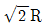
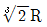
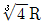
(정답률: 24%)
27. 고온 400℃, 저온 50℃의 온도 범위에서 작동하는 Carnot 사이클 열기관의 열효율을 구하면 몇 %인가?
- 37
- 42
- 47
- 52
(정답률: 26%)
28. 준평형 정적과정을 거치는 시스템에 대한 열전달량은? (단, 운동에너지와 위치에너지의 변화는 무시한다.)
- 0 이다.
- 이루어진 일량과 같다.
- 엔탈피 변화량과 같다.
- 내부에너지 변화량과 같다.
(정답률: 22%)
29. 계가 비가역 사이클을 이룰 때 클라우지우스(Clausius)의 적분을 옳게 나타낸 것은? (단, T는 온도, Q는 열량이다.)
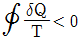
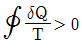
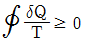
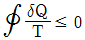
(정답률: 29%)
30. 밀폐 시스템이 압력 P1=200kPa, 체적 V1=0.1m3인 상태에서 P2=100kPa, V2 =0.3m3인 상태까지 가역팽창되었다. 이 과정이 P-V 선도에서 직선으로 표시된다면 이 과정 동안 시스템이 한 일은 약 몇 인가?
- 10
- 20
- 30
- 45
(정답률: 20%)
31. 온도 600 ℃의 구리 7 kg을 8 kg의 물속에 넣어 열적 평형을 이룬 후 구리와 물의 온도가 64.2℃가 되었다면 물의 처음 온도는 약 몇 ℃인가? (단, 이 과정 중 열손실은 없고, 구리의 비열은 0.386kJ/kg·K 이며 물의 비열은 4.184kJ/kg·K 이다.)
- 6 ℃
- 15 ℃
- 21 ℃
- 84 ℃
(정답률: 20%)
32. 여름철 외기의 온도가 30 ℃일 때 김치 냉장고의 내부를 5 ℃로 유지하기 위해 3 kW의 열을 제거해야 한다. 필요한 최소 동력은 약 몇 kW 인가? (단, 이 냉장고는 카르노 냉동기이다.)
- 0.27
- 0.54
- 1.54
- 2.73
(정답률: 23%)
33. 랭킨 사이클의 열효율 증대 방법에 해당하지 않는 것은?
- 복수기(응축기) 압력 저하
- 보일러 압력 증가
- 터빈의 질량유량 증가
- 보일러에서 증기를 고온으로 과열
(정답률: 23%)
34. 한 시간에 3600 kg의 석탄을 소비하여 6⑤0 kW를 발생하는 증기터빈을 사용하는 화력발전소가 있다면, 이 발전소의 열효율은 약 몇 % 인가? (단, 석탄의 발열량은 29900kJ/kg 이다.)
- 약 20%
- 약 30%
- 약 40%
- 약 50%
(정답률: 22%)
35. 증기 압축 냉동기에서 냉매가 순환되는 경로를 올바르게 나타낸 것은?
- 증발기 → 팽창밸브 → 응축기 → 압축기
- 증발기 → 압축기 → 응축기 → 팽창밸브
- 팽창밸브 → 압축기 → 응축기 → 증발기
- 응축기 → 증발기 → 압축기 → 팽창밸브
(정답률: 25%)
36. 2개의 정적과정과 2개의 등온과정으로 구성된 동력 사이클은?
- 브레이턴(brayton)사이클
- 에릭슨(ericsson)사이클
- 스털링(stirling)사이클
- 오토(otto)사이클
(정답률: 17%)
37. 랭킨 사이클을 구성하는 요소는 펌프, 보일러, 터빈, 응축기로 구성된다. 각 구성 요소가 수행하는 열역학적 변화 과정으로 틀린 것은?
- 펌프 : 단열 압축
- 보일러 : 정압 가열
- 터빈 : 단열 팽창
- 응축기 : 정적 냉각
(정답률: 25%)
38. 내부에너지가 40kJ, 절대압력이 200 kPa, 체적이 0.1m3, 절대온도가 300K인 계의 엔탈피는 약 몇 kJ 인가?
- 42
- 60
- 80
- 240
(정답률: 23%)
39. 실린더 내부에 기체가 채워져 있고 실린더에는 피스톤이 끼워져 있다. 초기 압력 50 kPa, 초기 체적 0.⑤m3인 기체를 버너로 PV1.4=constant가 되도록 가열하여 기체 체적이 0.2m3이 되었다면, 이 과정 동안 시스템이 한 일은?
- 1.33kJ
- 2.66kJ
- 3.99kJ
- 5.32kJ
(정답률: 18%)
40. 다음 중 폐쇄계의 정의를 올바르게 설명한 것은?
- 동작물질 및 일과 열이 그 경계를 통과하지 아니하는 특정 공간
- 동작물질은 계의 경계를 통과할 수 없으나 열과 일은 경계를 통과할 수 있는 특정 공간
- 동작물질은 계의 경계를 통과할 수 있으나 열과 일은 경계를 통과할 수 없는 특정 공간
- 동작물질 및 일과 열이 모두 그 경계를 통과할 수 있는 특정 공간
(정답률: 23%)
3과목: 기계유체역학
41. 그림에서 h = 100 cm이다. 액체의 비중이 1.50일 때 A점의 계기압력은 몇 kPa 인가?
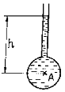
- 9.8
- 14.7
- 9800
- 14700
(정답률: 19%)
42. 점성계수는 0.3 poise, 동점성계수는 2 stokes인 유체의 비중은?
- 6.7
- 1.5
- 0.67
- 0.15
(정답률: 18%)
43. 안지름 D1, D2의 관이 직렬로 연결되어 있다. 비압축성 유체가 관 내부를 흐를 때 지름 D1인 관과 D2인 관에서의 평균유속이 각각 V1, V2이면 D1/D2은?
- V1/V2
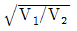
- V2/V1
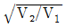
(정답률: 24%)
44. 물제트가 연직하 방향으로 떨어지고 있다. 높이 12m 지점에서의 제트 지름은 5cm, 속도는 24 m/s였다. 높이 4.5m 지점에서의 물제트의 속도는 약 몇 m/s인가? (단, 손실수두는 무시한다.)
- 53.9
- 42.7
- 35.4
- 26.9
(정답률: 15%)
45. 그림과 같이 비점성, 비압축성 유체가 쐐기 모양의 벽면 사이를 흘러 작은 구멍을 통해 나간다. 이 유동을 극좌표계(r,θ)에서 근사적으로 표현한 속도포텐셜은 ø=3lnr 일 때 원호 r=2(0≤θ≤π/2)를 통과하는 단위 길이당 체적유량은 얼마인가?
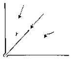
- π/4
- π
(정답률: 13%)
46. 다음 중 동점성계수(kinematic viscosity)의 단위는?
- N·s/m2
- kg/(m·s)
- m2/s
- m/s2
(정답률: 20%)
47. 1/10 크기의 모형 잠수함을 해수에서 실험한다. 실제 잠수함을 2m/s로 운전하려면 모형 잠수함은 약 몇 m/s의 속도로 실험하여야 하는가?
- 20
- 5
- 0.2
- 0.5
(정답률: 25%)
48. 물이 흐르는 관의 중심에 피토관을 삽입하여 압력을 측정하였다. 전압력은 20 mAq, 정압은 5mAq 일 때 관 중심에서 물의 유속은 몇 약 m/s 인가?
- 10.7
- 17.2
- 5.4
- 8.6
(정답률: 20%)
49. 어떤 액체가 800kPa의 압력을 받아 체적이 0.⑤% 감소한다면, 이 액체의 체적탄성계수는 얼마인가?
- 1265 kPa
- 1.6×104kPa
- 1.6×106kPa
- 2.2×106kPa
(정답률: 18%)
50. Navier-Stokes 방정식을 이용하여, 정상, 2차원, 비압축성 속도장 V=axi-ayj에서 압력을 x, y의 방정식으로 옳게 나타낸 것은? (단, a는 상수이고, 원점에서의 압력은 0이다.)
(정답률: 10%)
51. 비중 0.9, 점성계수 5×10-3 N·s/m2의 기름이 안지름 15cm 의 원형관 속을 0.6 m/s의 속도로 흐를 경우 레이놀즈수는 약 얼마인가?
- 16200
- 2755
- 1651
- 3120
(정답률: 23%)
52. 그림과 같이 속도 3m/s로 운동하는 평판에 속도 10m/s인 물 분류가 직각으로 충돌하고 있다. 분류의 단면적이 0.01m2이라고 하면 평판이 받는 힘은 몇 N 이 되겠는가?
- 295
- 490
- 980
- 16900
(정답률: 24%)
53. 다음 중 수력기울기선(Hydraulic Grade Line)은 에너지구배선(Energy Grade Line)에서 어떤 것을 뺀 값인가?
- 위치 수두 값
- 속도 수두 값
- 압력 수두 값
- 위치 수두와 압력 수두를 합한 값
(정답률: 22%)
54. 골프공(지름 D = 4 cm, 무게 W = 0.4 N)이 50m/s의 속도로 날아가고 있을 때, 골프공이 받는 항력은 골프공 무게의 몇 배인가? (단, 골프공의 항력계수 CD=0.24 이고, 공기의 밀도는 1.2 kg/m3 이다.)
- 4.52 배
- 1.7 배
- 1.13 배
- 0.452 배
(정답률: 21%)
55. 반지름 R인 원형 수문이 수직으로 설치되어 있다. 수면으로부터 수문에 작용하는 물에 의한 전압력의 작용점까지의 수직거리는? (단, 수문의 최상단은 수면과 동일 위치에 있으며 h는 수면으로부터 원판의 중심(도심)까지의 수직거리이다.)
(정답률: 23%)
56. 평판에서 층류 경계층의 두께는 다음 중 어느 값에 비례하는가? (단, 여기서 x는 평판의 선단으로부터의 거리이다.)
(정답률: 28%)
57. 수평으로 놓인 지름 10cm, 길이 200m인 파이프에 완전히 열린 글로브 밸브가 설치되어 있고, 흐르는 물의 평균속도는 2m/s이다. 파이프의 관 마찰계수가 0.02 이고, 전체 수두 손실이 10 m 이면, 글로브 밸브의 손실계수는?
- 0.4
- 1.8
- 5.8
- 9.0
(정답률: 20%)
58. 30m의 폭을 가진 개수로(open channel)에 20cm의 수심과 5m/s의 유속으로 물이 흐르고 있다. 이 흐름의 Froude수는 얼마인가?
- 0.57
- 1.57
- 2.57
- 3.57
(정답률: 21%)
59. 그림과 같은 통에 물이 가득차 있고 이것이 공중에서 자유낙하할 때, 통에서 A점의 압력과 B점의 압력은?
- A점의 압력은 B점의 압력의 1/2 이다.
- A점의 압력은 B점의 압력의 1/4 이다.
- A점의 압력은 B점의 압력의 2배 이다.
- A점의 압력은 B점의 압력과 같다.
(정답률: 18%)
60. 그림과 같이 수평 원관 속에서 완전히 발달된 층류 유동이라고 할 때 유량 Q의 식으로 옳은 것은? (단, μ는 점성계수, Q는 유량, P1과 P2는 1과 2지점에서의 압력을 나타낸다.)
(정답률: 29%)
4과목: 유체기계 및 유압기기
61. 진공펌프는 기체를 대기압 이하의 저압에서 대기압까지 압축하는 압축기의 일종이다. 다음 중 일반 압축기과 다른 점을 설명한 것으로 옳지 않은 것은?
- 흡입압력을 진공으로 함에 따라 압력비는 상당히 커지므로 격간용적, 기체누설을 가급적 줄여야 한다.
- 진공화에 따라서 외부의 액체, 증기, 기체를 빨아들이기 쉬워서 진공도를 저하시킬 수 있으므로 이에 주의를 요한다.
- 기체의 밀도가 낮으므로 실린더 체적은 축동력에 비해 크다.
- 송출압력과 흡입압력의 차이가 작으므로 기체의 유로 저항이 커져도 손실동력이 비교적 적게 발생한다.
(정답률: 57%)
62. 유체 커플링에서 drag torque란 무엇인가?
- 종동축과 원동축의 토크가 동일할 때의 토크
- 종동축과 원동축의 회전 속도가 동일할 때의 토크
- 원동축이 회전하고 종동축이 정지한 상태에서 발생하는 토크
- 종동축에 부하가 걸리지 않을 때 원동축에 발생하는 최대 토크
(정답률: 58%)
63. 펌프의 성능 곡선에서 체절 양정(shut off head)이란 무엇을 뜻하는가?
- 유량 Q= 0일 때의 양정
- 유량 Q = 최대일 때의 양정
- 축동력이 최소일 때의 양정
- 축동력이 최대일 때의 양정
(정답률: 63%)
64. 유체기계에 있어서 다음 중 유체로부터 에너지를 받아서 기계적 에너지로 변환시키는 장치로 볼 수 없는 것은?
- 송풍기
- 수차
- 유압모터
- 풍차
(정답률: 52%)
65. 다음 중 프란시스 수차에서 유량을 조정하는 장치는?
- 흡출관(draft tube)
- 안내깃(guide vane)
- 전향기(deflector)
- 니들 밸브(niddle valve)
(정답률: 36%)
66. 비교회전도 176 [m3/min, m, rpm], 회전수 2900 rpm, 양정 220m 인 4단 원심펌프에서 유량은 약 몇 m3/min 인가? (단, 여기서 비교회전도 값은 유량의 단위가 m3/min, 양정의 단위는 m, 회전수단위는 rpm 일 때를 기준으로 한 값이다.)
- 2.3
- 2.7
- 1.5
- 1.9
(정답률: 38%)
67. 다음 각 수차들에 관한 설명 중 옳지 않는 것은?
- 펠턴 수차는 비속도가 가장 높은 형식의 수차이다.
- 프란시스 수차는 반동형으로서 흔류수차에 해당한다.
- 프로펠러 수차는 저낙차 대유량인 곳에 주로 사용된다.
- 카플란 수차는 반동형으로서 축류수차에 해당한다.
(정답률: 58%)
68. 반동수차에 설치되는 흡출관의 사용목적으로 가장 옳은 것은?
- 회전차 출구와 방수면 사이의 낙차 및 회전차에서 유출되는 물의 속도수두를 유효하게 이용하기 위하여 설치한다.
- 상부 수면에서 회전차 입구까지의 위치수두를 최대한 이용하여 회전차 출구의 속도수두를 높이기 위해서 설치한다.
- 반동수차는 낙차가 커서 반동력이 매우 크므로 수차의 출구에 견고하게 설치하여 수차를 보호하기 위하여 설치한다.
- 반동수차는 낙차가 커서 회전차 출구와 방수면사이의 낙차를 최소화하여 반동력을 줄이기 위하여 설치한다.
(정답률: 54%)
69. 다음 중 원심펌프에서 사용되는 구성요소로 볼 수 없는 것은?
- 임펠러
- 케이싱
- 버킷
- 디퓨저
(정답률: 36%)
70. 팬(fan)의 종류 중 날개 길이가 길고 폭이 좁으며 날개의 형상이 후향깃으로 회전 방향에 대하여 뒤쪽으로 기울어져 있는 것은?
- 다익 팬
- 터보 팬
- 레이디얼 팬
- 익형 팬
(정답률: 43%)
71. 그램의 유압 회로는 펌프 출구 직후에 릴리프 밸브를 설치한 회로로서 안전 측면을 고려하여 제작된 회로이다. 이 회로의 명칭으로 옳은 것은?
- 압력 설정 회로
- 카운터 밸런스 회로
- 시퀀스 회로
- 감압 회로
(정답률: 37%)
72. 유압 작동유에서 공기의 혼입(용해)에 관한 설명으로 옳지 않은 것은?
- 공기 혼입 시 스폰지 현상이 발생할 수 있다.
- 공기 혼입 시 펌프의 캐비테이션 현상을 일으킬 수 있다.
- 압력이 증가함에 따라 공기가 용해되는 양도 증가한다.
- 온도가 증가함에 따라 공기가 용해되는 양도 증가한다.
(정답률: 49%)
73. 다음 중 펌프 작동 중에 유면을 적절하게 유지하고, 발생하는 열을 방산하여 장치의 가열을 방지하며, 오일 중의 공기나 이물질을 분리시킬 수 있는 기능을 갖춰야 하는 것은?
- 오일 필터
- 오일 제너레이터
- 오일 미스트
- 오일 탱크
(정답률: 52%)
74. 유압 필터를 설치하는 방법은 크게 복귀라인에 설치하는 방법, 흡입라인에 설치하는 방법, 압력 라인에 설치하는 방법, 바이패스 필터를 설치하는 방법으로 구분할 수 있는데, 다음 회로는 어디에 속하는가?
- 복귀라인에 설치하는 방법
- 흡입라인에 설치하는 방법
- 압력 라인에 설치하는 방법
- 바이패스 필터를 설치하는 방법
(정답률: 57%)
75. 유압 및 공기압 용어에서 스텝 모양 입력신호의 지령에 따르는 모터로 정의되는 것은?
- 오버 센터 모터
- 다공정 모터
- 유압 스테핑 모터
- 베인 모터
(정답률: 67%)
76. 주로 시스템의 작동이 정부하일 때 사용되며, 실린더의 속도 제어를 실린더에 공급되는 입구측 유량을 조절하여 제어하는 회로는?
- 로크 회로
- 무부하 회로
- 미터인 회로
- 미터아웃 회로
(정답률: 65%)
77. 방향제어밸브 기호 중 다음과 같은 설명에 해당하는 기호는?
(정답률: 62%)
78. 그림과 같은 유압기호의 설명으로 틀린 것은?
- 유압 펌프를 의미한다.
- 1방향 유동을 나타낸다.
- 가변 용량형 구조이다.
- 외부 드레인을 가졌다.
(정답률: 45%)
79. 그림과 같은 유압회로의 명칭으로 옳은 것은?
- 유압모터 병렬배치 미터인 회로
- 유압모터 병렬배치 미터아웃 회로
- 유압모터 직렬배치 미터인 회로
- 유압모터 직렬배치 미터아웃 회로
(정답률: 50%)
80. 유압실린더로 작동되는 리프터에 작용하는 하중이 15000N이고 유압의 압력이 7.5 MPa일 때 이 실린더 내부의 유체가 하중을 받는 단면적은 약 몇 cm2 인가?
- 5
- 20
- 500
- 2000
(정답률: 54%)
5과목: 건설기계일반 및 플랜트배관
81. 압출 가공(extrusion)에 관한 일반적인 설명으로 틀린 것은?
- 직접 압출보다 간접 압출에서 마찰력이 적다.
- 직접 압출보다 간접 압출에서 소요동력이 적게 든다.
- 압출 방식으로는 직접(전방) 압출과 간접(후방) 압출 등이 있다.
- 직접 압출이 간접 압출보다 압출 종료시 콘테이너에 남는 소재량이 적다.
(정답률: 40%)
82. 질화법에 관한 설명 중 틀린 것은?
- 경화층은 비교적 얇고, 경도는 침탄한 것보다 크다.
- 질화법은 재료 중심까지 경화하는데 그 목적이 있다.
- 질화법의 기본적인 화학반응식은 2NH3→2N+3H2 이다.
- 질화법의 효과를 높이기 위해 첨가되는 원소는 Al, Cr, Mo 등이 있다.
(정답률: 39%)
83. 와이어 방전 가공액 비저항값에 대한 설명으로 틀린 것은?
- 비저항값이 낮을 때에는 수돗물을 첨가한다.
- 일반적으로 방전가공에서는 10~100kΩ·cm의 비저항값을 설정한다.
- 비저항값이 높을 때에는 가공액을 이온교환장치로 통과시켜 이온을 제거한다.
- 비저항값이 과다하게 높을 때에는 방전 간격이 넓어져서 방전효율이 저하된다.
(정답률: 26%)
84. 전기 저항 용접 중 맞대기 용접의 종류가 아닌 것은?
- 업셋 용접
- 퍼커션 용접
- 플래시 용접
- 프로젝션 용접
(정답률: 35%)
85. 주물사로 사용되는 모래에 수지, 시멘트, 석고 등의 점결제를 사용하며, 경화시간을 단축하기 위하여 경화촉진제를 사용하여 조형하는 주형법은?
- 원심주형법
- 셀몰드 주형법
- 자경성 주형법
- 인베스트먼트 주형법
(정답률: 32%)
86. 다음 중 다이아몬드, 수정 등 보석류 가공에 가장 적합한 가공법은?
- 방전 가공
- 전해 가공
- 초음파 가공
- 슈퍼 피니싱 가공
(정답률: 40%)
87. 유압프레스에서 램의 유효단면적이 50cm2, 유효단면적에 작용하는 최고 유압이 40kgf/cm2일 때 유압프레스의 용량(ton)은?
- 1
- 1.5
- 2
- 2.5
(정답률: 42%)
88. 절삭유가 갖추어야 할 조건으로 틀린 내용은?
- 마찰계수가 적고 인화점, 발화점이 높을 것
- 냉각성이 우수하고 윤활성, 유동성이 좋을 것
- 장시간 사용해도 변질되지 않고 인체에 무해 할 것
- 절삭유의 표면장력이 크고 칩의 생성부에는 침투되지 않을 것
(정답률: 39%)
89. 플러그 게이지에 대한 설명으로 옳은 것은?
- 진원도도 검사할 수 있다.
- 통과측이 통과되지 않을 경우는 기준 구멍보다 큰 구멍이다.
- 플러그 게이지는 치수공차의 합격 유·무 만을 검사할 수 있다.
- 정지측이 통과할 때에는 기준 구멍보다 작고, 통과측보다 마멸이 심하다.
(정답률: 36%)
90. 공작물의 길이가 600 mm, 지름이 25 mm인 강재를 아래의 조건으로 선반 가공할 때 소요되는 가공시간(t)은 약 몇 분인가? (단, 1회 가공이다.)
- 1.1
- 2.1
- 3.1
- 4.1
(정답률: 20%)
91. 휠 크레인에 대한 설명으로 틀린 것은?
- 고무바퀴식 셔블계 굴착기의 작업장치에 크레인 장치를 장착한 형태로 볼 수 있다.
- 지면과의 접지면적이 크기 때문에 연약지반에서의 작업에 적합하다.
- 일반적으로 트럭 크레인보다 소형이며 하나의 엔진으로 크레인의 주행과 크레인 작업을 수행할 수 있다.
- 경우에 따라 모빌 크레인, 휠타입 트랙터 크레인 등으로 불리기도 한다.
(정답률: 52%)
92. 다음 건설기계의 규격 표시방법이 잘못 연결된 것은?
- 불도저 : 작업가능상태의 중량(t)
- 로더 : 표준버킷의 산적용량(m3)
- 지게차 : 최대 들어올림 용량(t)
- 모토그레이더 : 시간당 작업능력 (m3/h)
(정답률: 43%)
93. 지게차의 스티어링 장치는 주로 어떠한 방식을 채택하고 있는가?
- 전륜 조향식
- 포크 조향식
- 마스트 조향식
- 후륜 조향식
(정답률: 61%)
94. 크레인의 여러 가지 작업장치를 가지고 수행 가능한 작업에 해당하지 않는 것은?
- 드래그라인 작업
- 아스팔트 다짐 작업
- 어스 드릴 작업
- 기둥박지 작업
(정답률: 45%)
95. 비 자항식 준설선의 장단점에 대한 설명으로 틀린 것은?
- 펌프식으로 운용할 경우 거리에 제한을 받지 않고 비교적 먼 거리를 송토할 수 있다.
- 이동시 예인선 등이 필요하다.
- 자항식에 비해 구조가 간단하고 가격이 싸다.
- 펌프식인 경우 경토질에 부적합하며, 파이프를 수면에 띄우므로 파도의 영향을 받는다.
(정답률: 41%)
96. 36% Ni 성분을 지니는 Fe-Ni 합금으로 상온에서 열 팽창율이 탄소강이 약 1/10에 불과하여 불변강에 해당하는 합금은?
- 쾌삭강
- 인바(Invar)
- 단조강
- 서멧(Cermet)
(정답률: 60%)
97. 굴착 적재기계 중 하나로 버킷래더굴착기와 유사한 구조로서 커터비트(cutter bit)를 규칙적으로 배열한 체인커터를 회전시키는 커터붐을 차체에 설치하고 커터의 회전으로 토사를 굴착하는 것은?
- 트렌처(trencher)
- 크램쉘(clamshell)
- 드래그라인(dragline)
- 백호(back hoe)
(정답률: 42%)
98. 건설기계관리법에서 규정하는 건설기계의 범위에 해당하지 않는 것은?
- 모터 그레이더 : 정지장치를 가진 자주식인 것
- 쇄석기 : 20킬로와트 이상의 원동기를 가진 이동식인 것
- 지게차 : 무한궤도식으로 들어올림 장치와 조종석을 가진 것
- 준설선 : 펌프식·바켓식·디퍼식 또는 그래브식으로 비자항식인 것(해상화물운송에 사용하기 위하여 「선박법」 에 따른 선박으로 등록된 것은 제외)
(정답률: 47%)
99. 다음 중 운반기계에 해당되지 않는 것은?
- 왜곤
- 덤프 트럭
- 어스 오거
- 모노레일
(정답률: 59%)
100. 파워셔블의 작업에 있어서 버킷 용량은 1.5cm3, 체적환산계수는 0.95, 작업 효율은 0.7, 버킷 계수는 1.2, 1회 사이클 시간은 140초 일 때 시간당 작업량(m3/h)은?
- 7.3
- 14.6
- 21.9
- 29.2
(정답률: 35%)